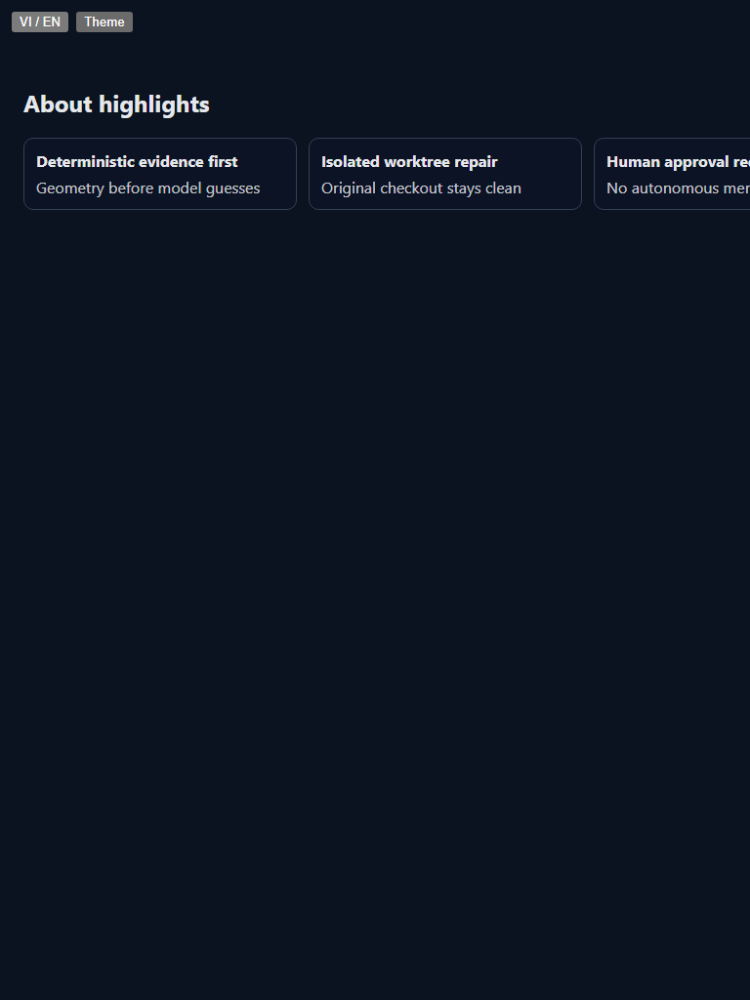
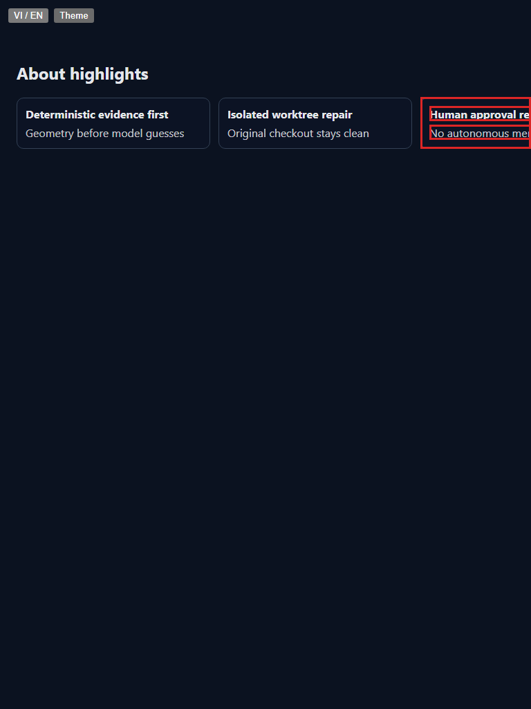
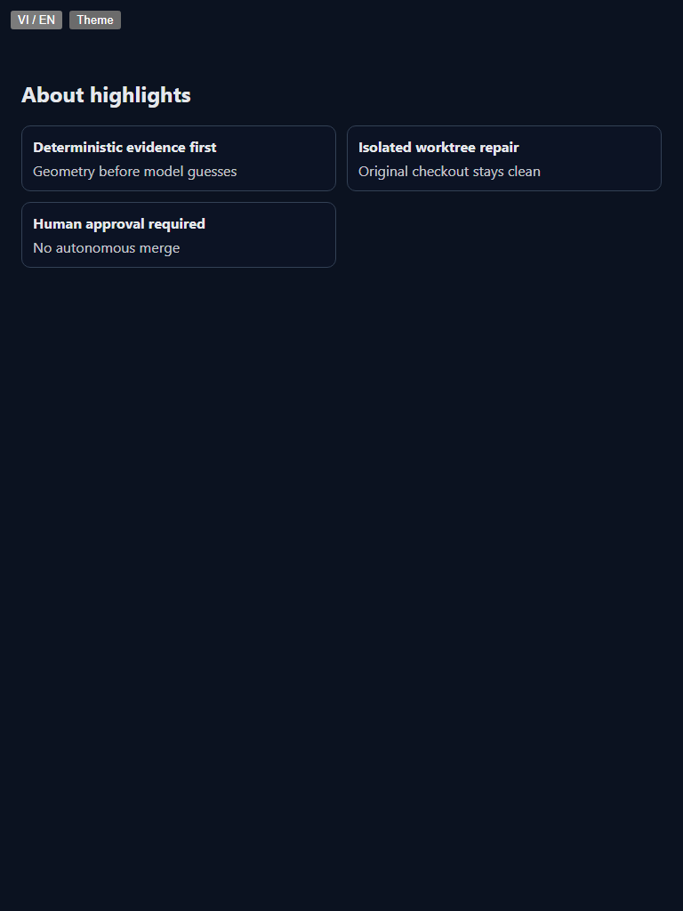
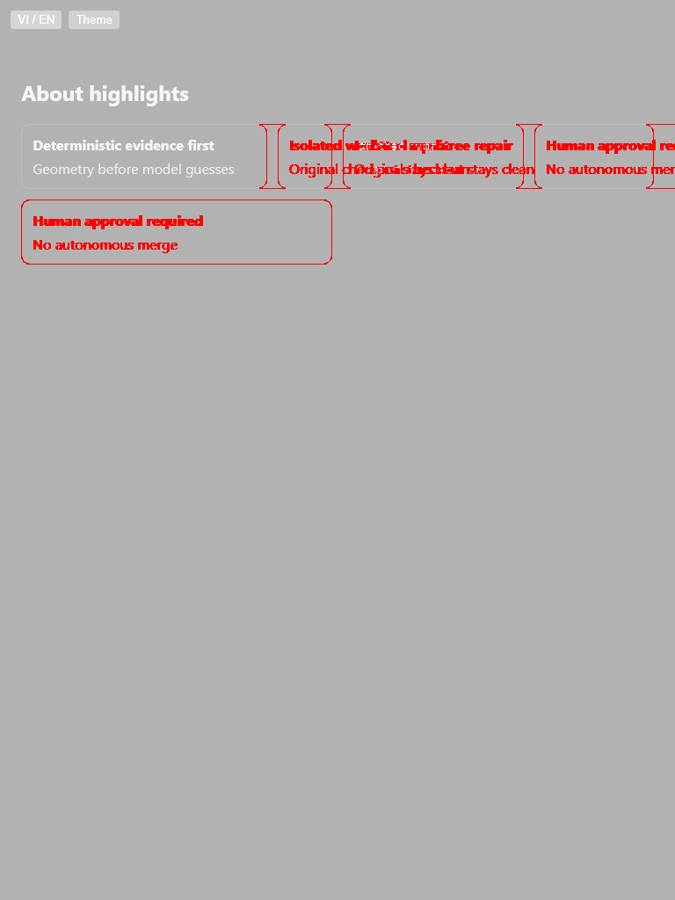

1. Summary
Title
Vietnamese About highlights overflow at tablet width
Description
At 768px in Vietnamese, the highlight rows extend outside the viewport because white-space:nowrap and a late grid override raise min-content width.
Route / state
/ · 768×1024 · vi · darkBase ref
HEADProvider
mock
Worktree
D:\Hoc\MyProjects\ReproSight\.reprosight\worktrees\run_2026-07-22T04-08-07-366Z_466ad684Original checkout hash
e465e0753b8267f14183610c3069128c3287ecb75c043c3b165bbd5ee51f55242. Reproduction
Before

Before annotated

Document metrics
{
"clientWidth": 768,
"scrollWidth": 888,
"bodyClientWidth": 768,
"bodyScrollWidth": 888,
"clientHeight": 1024,
"scrollHeight": 1024
}{
"overflow": [
{
"id": "overflow-1",
"kind": "horizontalOverflow",
"selector": "html > body > section.about.container > ul.about__highlights > li",
"domPath": "html > body > section.about.container > ul.about__highlights > li",
"rect": {
"x": 608,
"y": 140.8125,
"width": 280,
"height": 74
},
"parentRect": {
"x": 24,
"y": 140.8125,
"width": 720,
"height": 74
},
"overflowAmount": 120,
"position": "static",
"transform": "none",
"width": "254px",
"minWidth": "auto",
"maxWidth": "none",
"whiteSpace": "normal",
"flexOrGrid": "list-item|flex:0 1 auto|basis:auto",
"ignored": false,
"decorativeLikely": false
},
{
"id": "overflow-2",
"kind": "horizontalOverflow",
"selector": "html > body > section.about.container > ul.about__highlights > li > span",
"domPath": "html > body > section.about.container > ul.about__highlights > li > span",
"rect": {
"x": 621,
"y": 180.8125,
"width": 254,
"height": 21
},
"parentRect": {
"x": 608,
"y": 140.8125,
"width": 280,
"height": 74
},
"overflowAmount": 107,
"position": "static",
"transform": "none",
"width": "254px",
"minWidth": "0px",
"maxWidth": "none",
"whiteSpace": "normal",
"flexOrGrid": "block|flex:0 1 auto|basis:auto",
"ignored": false,
"decorativeLikely": false
},
{
"id": "overflow-3",
"kind": "horizontalOverflow",
"selector": "html > body > section.about.container > ul.about__highlights > li > strong",
"domPath": "html > body > section.about.container > ul.about__highlights > li > strong",
"rect": {
"x": 621,
"y": 153.8125,
"width": 193.796875,
"height": 21
},
"parentRect": {
"x": 608,
"y": 140.8125,
"width": 280,
"height": 74
},
"overflowAmount": 46.796875,
"position": "static",
"transform": "none",
"width": "193.797px",
"minWidth": "0px",
"maxWidth": "none",
"whiteSpace": "nowrap",
"flexOrGrid": "inline-block|flex:0 1 auto|basis:auto",
"ignored": false,
"decorativeLikely": false
}
],
"overlap": [],
"clipping": [],
"sticky": [],
"axe": {
"violations": [
{
"id": "landmark-one-main",
"impact": "moderate",
"description": "Ensure the document has a main landmark",
"help": "Document should have one main landmark",
"helpUrl": "https://dequeuniversity.com/rules/axe/4.12/landmark-one-main?application=playwright",
"nodes": 1
},
{
"id": "page-has-heading-one",
"impact": "moderate",
"description": "Ensure that the page, or at least one of its frames contains a level-one heading",
"help": "Page should contain a level-one heading",
"helpUrl": "https://dequeuniversity.com/rules/axe/4.12/page-has-heading-one?application=playwright",
"nodes": 1
},
{
"id": "region",
"impact": "moderate",
"description": "Ensure all page content is contained by landmarks",
"help": "All page content should be contained by landmarks",
"helpUrl": "https://dequeuniversity.com/rules/axe/4.12/region?application=playwright",
"nodes": 1
}
],
"incomplete": 1,
"passes": 17,
"note": "Automated axe findings are not a complete manual accessibility audit."
}
}3. Root cause & source candidates
Vietnamese About highlight labels overflow at 768px due to nowrap and a desktop grid override winning at tablet width.
Confidence: 0.91
| Rank | File | Line | Selector | Property | Value | Reason |
|---|---|---|---|---|---|---|
| 1 | unresolved |
47 | .about__highlights strong |
white-space |
nowrap |
Matched rule .about__highlights strong sets white-space:nowrap; Issue expected culprit selector |
| 2 | styles.css |
— | .about__highlights |
grid-template-columns |
1fr |
Collected from document.styleSheets |
| 3 | styles.css |
— | .about__highlights |
grid-template-columns |
280px 280px 280px |
Collected from document.styleSheets |
| 4 | styles.css |
— | .about__highlights strong |
display |
inline-block |
Issue expected culprit selector |
| 5 | styles.css |
— | .about__highlights strong |
white-space-collapse |
collapse |
Issue expected culprit selector |
| 6 | styles.css |
— | .about__highlights strong |
text-wrap-mode |
nowrap |
Issue expected culprit selector |
| 7 | styles.css |
— | .about__highlights strong |
font-weight |
700 |
Issue expected culprit selector |
| 8 | styles.css |
— | .about__highlights |
grid-template-columns |
1fr 1fr |
Collected from document.styleSheets |
| 9 | unresolved |
47 | .about__highlights strong |
white-space |
nowrap |
Matched rule .about__highlights strong sets white-space:nowrap; Horizontal overflow 120.0px |
| 10 | styles.css |
— | .container |
max-width |
960px |
Collected from document.styleSheets |
| 11 | styles.css |
— | .about__highlights li |
border-top-width |
1px |
Collected from document.styleSheets |
| 12 | styles.css |
— | .about__highlights li |
border-right-width |
1px |
Collected from document.styleSheets |
| 13 | styles.css |
— | .about__highlights li |
border-bottom-width |
1px |
Collected from document.styleSheets |
| 14 | styles.css |
— | .about__highlights li |
border-left-width |
1px |
Collected from document.styleSheets |
| 15 | styles.css |
— | .about__highlights li |
border-image-width |
initial |
Collected from document.styleSheets |
Some authored sources could not be resolved to repository paths.
4. Patch
Allow wrapping on highlight labels and remove the conflicting late grid override.
Policy: accepted
Files: styles.css
· +1/-1
--- a/styles.css
+++ b/styles.css
@@ -46,7 +46,7 @@
.about__highlights strong {
display: inline-block;
- white-space: nowrap;
+ white-space: normal;
font-weight: 700;
}
@@ -62,7 +62,3 @@
grid-template-columns: 1fr 1fr;
}
}
-
-/* buggy late desktop override without min-width media */
-.about__highlights {
- grid-template-columns: 280px 280px 280px;
-}
5. Verification
After

Diff

Target verdict
Fixed
Target failures
none
Overall
VERIFIED
Axe before→after
3 → 3
New axe
none
New console errors
none
Screenshot note
Screenshots from different environments are not exact equivalents.
Regression matrix
| State | Viewport | Locale | Theme | Pass | Failures |
|---|---|---|---|---|---|
| original | 768×1024 | vi | dark | pass | |
| desktop-en-dark | 1440×900 | en | dark | pass | |
| desktop-vi-dark | 1440×900 | vi | dark | pass | |
| tablet-en-dark | 768×1024 | en | dark | pass | |
| mobile-en-dark | 390×844 | en | dark | pass | |
| mobile-vi-dark | 390×844 | vi | dark | pass |
6. Decision
Human review is required. Approval updates ReproSight metadata and allows patch export only. It does not commit, merge, or push the target repository.
reprosight export-patch run_2026-07-22T04-08-07-366Z_466ad684
reprosight approve run_2026-07-22T04-08-07-366Z_466ad684
reprosight reject run_2026-07-22T04-08-07-366Z_466ad684 --reason "..."
reprosight clean run_2026-07-22T04-08-07-366Z_466ad684